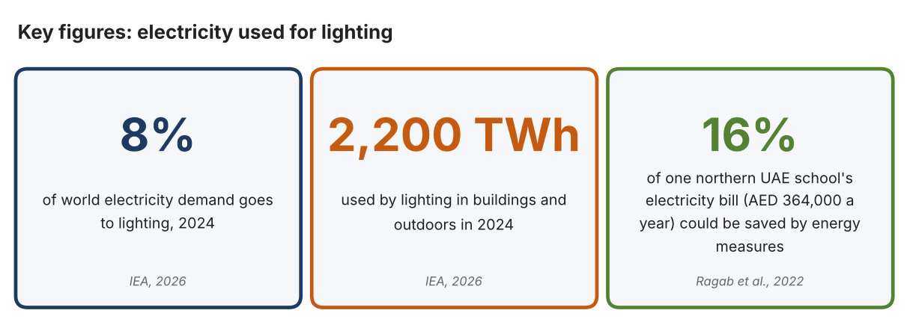
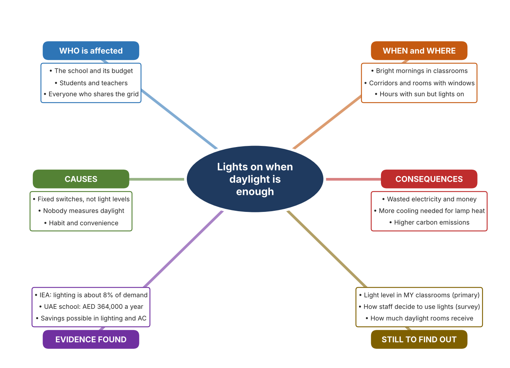
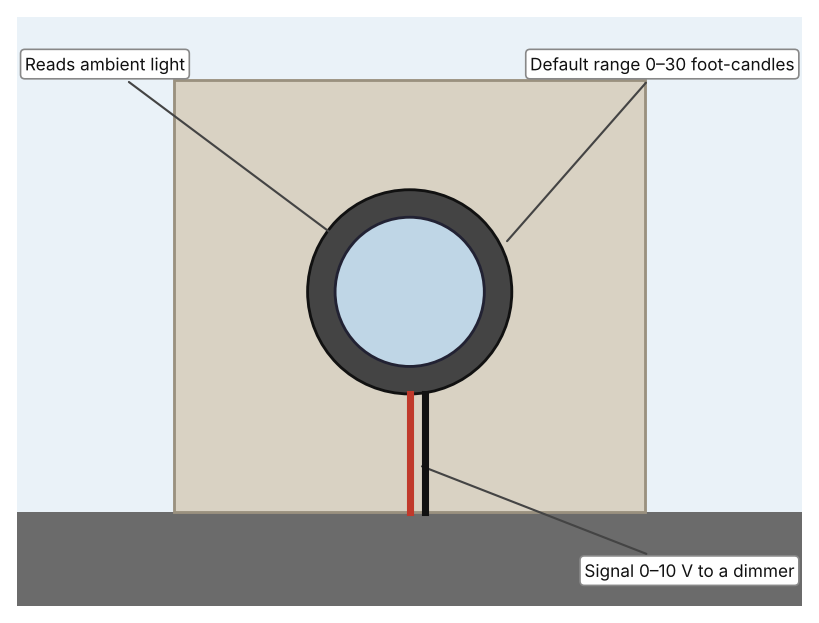
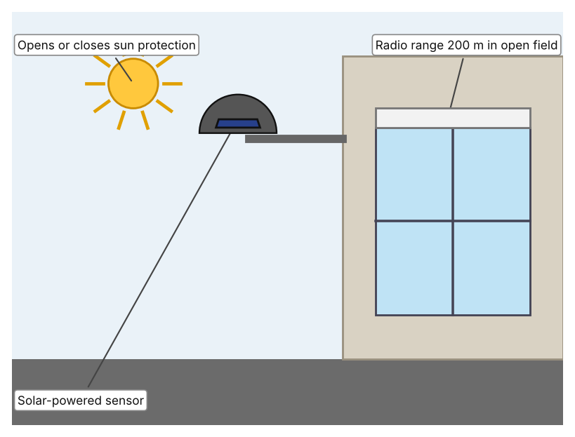
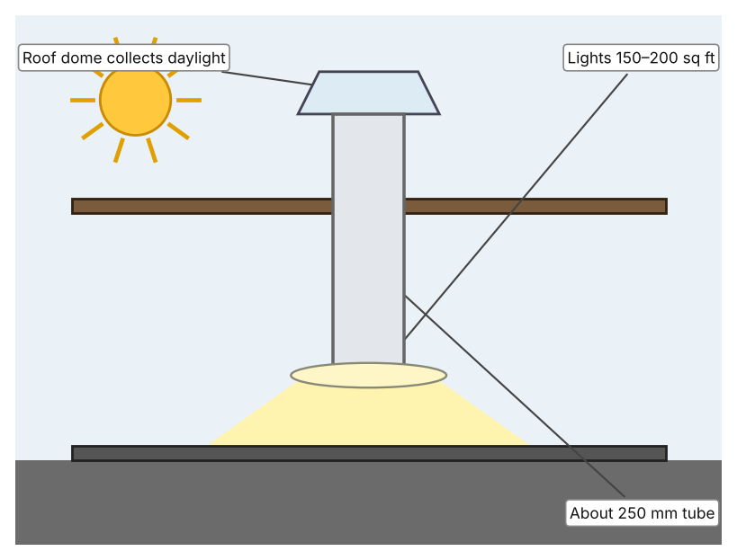

A1 · Design need
Identify and explain the problem faced by your client and community.
My client is the Eco-Committee of a Dubai school, represented by the Energy Monitor teacher. The committee has noticed that classroom lights are often on during bright mornings when sunlight already comes through the windows. The committee needs the electricity wasted on unnecessary lighting to be reduced, and it needs the decision about when lights are needed to be based on measured light and not on habit.
The people most affected are the school and its budget, because wasted electricity is an avoidable cost. Students and teachers are a second group, because their rooms need enough light to work in but not more. The wider community is a third group, because electricity produced for the whole country carries an environmental cost.
The need is real because lighting is a large use of electricity. The International Energy Agency reports that lighting in buildings and outdoors used about 8% of global electricity demand in 2024, roughly 2,200 TWh (Delmastro et al.). A study of a large school in the northern UAE found that energy measures, mainly for lighting and air conditioning, could save AED 364,000 a year, about 16% of its annual electricity bill (Ragab et al.). The study looked at one school, so it shows that waste is possible in a UAE school, but it does not say how much of it is in mine.
Figure 1 summarises the key numbers. The IEA figure is global and the Ragab study covers a single school, so I treat both as a pattern and not as proof about my school. In my own words: a light that is on when the room is already bright gives nothing back. Figure 2 is my mind map of the problem.
284 words


A2 · Research plan
Six research questions of different types, each with a priority, a research type and evidence.
| # | Question | Priority | Primary / secondary | Evidence | Brief answer |
|---|---|---|---|---|---|
| 1 | Factual: How much of the world's electricity is used for lighting? | High | Secondary | IEA, 2026 (Appendix A, Source 1) | About 8% of global electricity demand in 2024, roughly 2,200 TWh, including buildings and outdoor lighting. |
| 2 | Factual: What did a study of a UAE school find about energy waste? | High | Secondary | Ragab et al., 2022 (Appendix A, Source 2) | A large school in the northern UAE could save AED 364,000 a year, about 16% of its electricity bill, with energy measures mainly in lighting and air conditioning. |
| 3 | Conceptual: How can a light level be measured, and how can that measurement control lights or shade? | Medium | Secondary | Leviton page (Source 3); Somfy page (Source 4) | A photocell reads ambient light and sends a signal to hold light levels constant; a sun sensor opens or closes shades as sunshine changes. |
| 4 | Debatable: Should a school save lighting energy by dimming lamps, by controlling shades, or by bringing daylight in? | Medium | Secondary | Appendix A, Sources 3, 4 and 5 | Dimming uses less power but needs wiring; shades cut heat as well as glare; skylights bring light without electricity but only suit rooms below a roof. My view: measure first, then choose. |
| 5 | Debatable (challenges my assumption, UAE source): The UAE is sunny and electricity is cheap to produce, so is wasted lighting really important? | High | Secondary | Ragab et al., 2022 (Source 2); IEA, 2026 (Source 1) | One UAE school could cut about 16% of its bill and lighting is 8% of world demand, so waste matters even in a sunny country. The study is for one school, so my own readings must show the situation in mine. |
| 6 | Factual (primary): How bright are our classrooms in the morning with and without the lights, and how do staff decide when to switch lights on? | High | Primary | Own light-level log and staff survey (Appendix A, Sources 6 and 7) | [Student data needed: write the lux readings (with the time of day) and survey averages, then two sentences on the pattern you see.] |
A3 · Existing products
Three significantly different products, each analysed with ACCESS FM, with pros and cons.
Product 1: Daylight photocell (Leviton PCOUT-SV)

Illustration by the author based on “Photocell, Outdoor, Side View PCOUT-SV,” Leviton (Appendix A, Source 3). [Student: replace with a photo from the source, cited MLA 9]
Product 2: Sun sensor for shades (Somfy Sunis Wirefree RTS)

Illustration by the author based on the Somfy Sunis Wirefree RTS sun sensor, Dieffematic (Appendix A, Source 4). [Student: replace with a photo from the source, cited MLA 9]
Product 3: Tubular skylight (Solatube 160 DS)

Illustration by the author based on “160 DS Tubular Skylight,” Solatube (Appendix A, Source 5). [Student: replace with a photo from the source, cited MLA 9]
ACCESS FM analysis
| ACCESS FM | Product 1 | Product 2 | Product 3 |
|---|---|---|---|
| Aesthetics | Small round sensor; appearance is not described on the page (Leviton). | Round white-grey sensor, 10 cm across; colour not described (Dieffematic). | Round roof dome and a round or square ceiling diffuser (Solatube). |
| Cost | Price not shown (Leviton). | EUR 281.38 (Dieffematic). | Price on request (Solatube). |
| Customer | Building managers who control dimmable lights (my inference). | Owners of motorised blinds or awnings. | Owners of rooms under a roof, up to 200 sq ft. |
| Environment | Hardwired, +24 VDC; reduces electricity by holding light constant. | Solar powered with a rechargeable battery; 24-month warranty. | Uses daylight instead of electricity; operating energy is zero (my inference). |
| Size | Size not shown. | 10 cm diameter; IP44. | Tube about 10 in (250 mm), up to about 20 ft (6 m) long. |
| Safety | Electrical safety class is not described beyond a low-voltage supply. | IP44 casing; radio control, no mains wiring at the sensor. | Roof penetration must be sealed; the page does not discuss safety. |
| Function | Measures light and signals a dimmer or relay to keep a steady level (daylight harvesting). | Opens or closes sun protection as the light level changes; thresholds are not stated. | Delivers daylight through a tube to a room; how the dome captures light is not described. |
| Materials | Materials are not stated. | Materials are not stated. | Materials are not stated. |
Pros and cons
| Product 1 | Product 2 | Product 3 | |
|---|---|---|---|
| Pro | Directly measures the light level and controls lamps to match. | Needs no mains wiring and controls heat and glare as well as light. | Brings in free daylight with no electricity. |
| Con | Needs a compatible dimmer and wiring; price not shown. | Controls shades, not lamps, so lamps still need a separate control. | Only works for rooms under a roof and gives no control of the level. |
A4 · Design brief
Restate the need, summarise the research and the existing products, and state the design intent.
My client, the Eco-Committee of a Dubai school, needs the electricity wasted on unnecessary lighting to be reduced, with decisions based on measured light and not habit. The problem is real: lighting used about 8% of global electricity in 2024, roughly 2,200 TWh (Appendix A, Source 1). A study of a northern UAE school found that energy measures, mainly in lighting and air conditioning, could save about 16% of its annual bill, or AED 364,000 a year (Appendix A, Source 2).
My research shows that waste often happens because nobody measures how bright a room already is (Appendix A, Sources 1 and 3). The UAE study covers one school, so I need my own evidence. My debatable questions led me to decide that dimming, shading and daylight each cover only part of the problem, and my challenged assumption (that sunny countries need not worry about lighting waste) showed me that the numbers say otherwise. I will gather my own evidence with the light-level log and the survey, always with permission (Appendix A, Sources 6 and 7).
I analysed three very different existing solutions. A photocell measures ambient light and tells a dimmer to hold a steady level, but it needs a compatible dimmer and wiring (Appendix A, Source 3). A solar-powered sun sensor tells shades to open or close and works by radio up to 200 m in the open, but it controls shades and not lamps (Appendix A, Source 4). A tubular skylight brings daylight to rooms of up to 200 sq ft without electricity, but it only suits rooms under a roof (Appendix A, Source 5). They give me three ideas for inspiration: measuring light, shading, and bringing daylight in. Each has a weakness that another covers.
My design intent is therefore to create a solution that measures the light in a room and reduces unnecessary lighting automatically. It must be affordable, simple for a teacher to understand, reliable all day, and safe for use in a classroom. I have deliberately not fixed what form it will take. That decision will be made in Criterion B, after I analyse my own log and survey against the evidence in Appendix A.
362 words
Appendix A · Research notes and sources
Secondary sources in MLA 9, with notes and where each source is used.
| # | Source (MLA 9) | Key notes | Used in |
|---|---|---|---|
| 1 | Delmastro, Chiara, et al. “The Next Wave of LED Lighting: Smarter, Circular and More Efficient.” International Energy Agency, 6 Mar. 2026, iea.org/commentaries/the-next-wave-of-led-lighting-smarter-circular-and-more-efficient. Accessed 21 Oct. 2026. | Lighting in buildings and outdoors about 8% of global electricity demand in 2024 (about 2,200 TWh); occupancy and daylight sensors are mature and cost-effective, especially in non-residential buildings. | A1; A2 Q1 and Q5; A4. |
| 2 | Ragab, Karim Mohamed, et al. “A Study and Assessment of the Status of Energy Efficiency and Conservation at School Buildings.” American University of Sharjah Repository, 2022, repository.aus.edu/entities/publication/98e7878b-b112-47cc-a770-f8151154cdc5. Accessed 21 Oct. 2026. | Large school in the northern UAE; lighting and air conditioning measures; all measures save AED 364,000 a year, about 16% of the annual electricity bill. | A1; A2 Q2 and Q5; A4. |
| 3 | “Photocell, Outdoor, Side View PCOUT-SV.” Leviton, leviton.com/products.pcout-sv. Accessed 21 Oct. 2026. | Measures ambient light and signals a compatible dimmer or relay; hardwired; +24 VDC supply; 0–10 VDC output; default 0–30 foot-candles; price not shown. | A2 Q3 and Q4; A3 Product 1; A4. |
| 4 | “Sun Sensor Somfy Sunis Wirefree RTS 9013075.” Dieffematic, dieffematic.com/en/products/sun-sensor-somfy-sunis-wirefree-rts-9013075-automation-automatisms-original. Accessed 21 Oct. 2026. | EUR 281.38; opens or closes sun protection with light; solar powered; RTS radio, 200 m open field; 10 cm diameter; IP44; 24-month warranty. | A2 Q3 and Q4; A3 Product 2; A4. |
| 5 | “160 DS Tubular Skylight.” Solatube, solatube.com/residential/skylights/product-selection-guide/160-ds/. Accessed 21 Oct. 2026. | Delivers daylight to spaces up to 200 sq ft; tube about 10 in (250 mm), up to about 20 ft; price on request. | A2 Q4; A3 Product 3; A4. |
| 6 | Primary: classroom light-level log, completed by the student on [date]. Accessed own data. | [Student: summarise your counts.] | A2 primary question; A4. |
| 7 | Primary: survey of [number] people, completed on [date]. | [Student: summarise your averages.] | A2 primary question; A4. |
Primary research instrument 1: classroom light-level log
Student takes lux readings with a phone light-meter app or a lux meter, with permission and a teacher present.
| Room | Time | Lights on? (Y/N) | Lux with lights on | Lux with lights off | Notes |
|---|---|---|---|---|---|
| Classroom A | |||||
| Classroom B | |||||
| Corridor | |||||
| Library |
Primary research instrument 2: survey
Rate each statement from 1 (strongly disagree) to 5 (strongly agree). Collect responses with permission and record no names.
| Statement | 1 | 2 | 3 | 4 | 5 | Total responses |
|---|---|---|---|---|---|---|
| Classroom lights are often on when the room is already bright. | ||||||
| I know who decides when the lights are switched on. | ||||||
| I would be happy for lights to adjust by themselves. | ||||||
| Our classroom is too dark in the morning. |